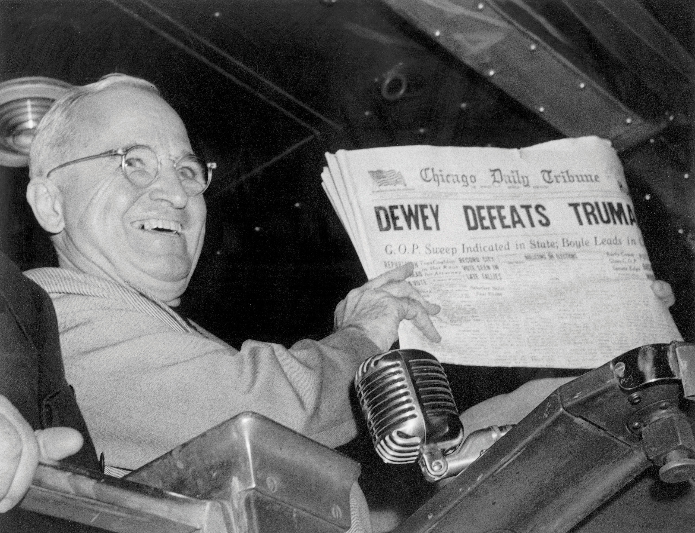

Popular media such as television and the Internet have forever changed the newspaper industry. To fully understand the impact that current technology is having on the newspaper industry, it is necessary to first examine the current state of the industry.
Although numerous papers exist in the United States, a few major publications dominate circulation and, thus, exert great influence on the newspaper industry. Each of these newspapers has its own unique journalistic and editorial style, relying on different topics and techniques to appeal to its readership.
USA Today currently tops the popularity chart with a daily circulation of 2,281,831.“Top 10 US Newspapers by Circulation,” Newspapers.com, http://www.newspapers.com/top10.html. This national paper’s easy-to-read content and visually focused layout contribute to its high readership numbers. Although the paper does not formally publish on weekends, it does have a partner paper titled USA Weekend. USA Today consists of four sections: news, money, sports, and life; for the ease of its readers, the newspaper color-codes each section. Owned by the Gannett Company, the paper caters to its audience by opting for ease of comprehension over complexity.
Established in the late 1800s, The Wall Street Journal closely trails USA Today, with a circulation of 2,070,498.“Top 10 US Newspapers by Circulation,” Newspapers.com, http://www.newspapers.com/top10.html. In fact, USA Today and The Wall Street Journal have competed for the top circulation spot for many years. An international paper that focuses on business and financial news, The Wall Street Journal primarily uses written narration with few images. Recent changes to its layout, such as adding advertising on the front page and minimizing the size of the paper slightly to save on printing costs, have not dramatically shifted this long-standing focus. The paper runs between 50 and 96 pages per issue and gives its readers up-to-date information on the economy, business, and national and international financial news.
The New York Times is another major publication, with circulation at 1,121,623.“Top 10 US Newspapers by Circulation,” Newspapers.com, http://www.newspapers.com/top10.html. Founded in 1851, the New York City–based paper is owned by the New York Times Company, which also publishes several smaller regional papers. The flagship paper contains three sections: news, opinion, and features. Although its articles tend to be narrative-driven, the paper does include images for many of its articles, creating a balance between the wordier layout of The Wall Street Journal and the highly visual USA Today. The New York Times publishes international stories along with more local stories in sections such as Arts, Theater, and Metro. The paper has also successfully established itself on the Internet, becoming one of the most popular online papers today.
The Los Angeles Times—currently the only West Coast paper to crack the top 10 circulation list—has also contributed much to the newspaper industry. First published in 1881, the California-based paper has a distribution of 907,977.“Top 10 US Newspapers by Circulation,” Newspapers.com, http://www.newspapers.com/top10.html. Perhaps the most unique feature of the paper is its Column One, which focuses on sometimes-bizarre stories meant to engage readers. Known for its investigative journalistic approach, the Los Angeles Times demands that its journalists “provide a rich, nuanced account” of the issues they cover.Los Angeles Times, “L.A. Times Ethics Guidelines,” Readers’ Representative Journal (blog), http://latimesblogs.latimes.com/readers/2007/07/los-angeles-tim.html. By 2010, the paper had won 39 Pulitzer Prizes, including 5 gold medals for public service.Los Angeles Times, “Times’ Pulitzer Prizes,” http://www.latimes.com/about/mediagroup/latimes/la-mediagroup-pulitzers,0,1929905.htmlstory.
First published in 1877, The Washington Post is Washington, DC’s oldest and largest paper, with a daily circulation of 709,997.“Top 10 US Newspapers by Circulation,” Newspapers.com, http://www.newspapers.com/top10.html. According to its editors, the paper aims to be “fair and free and wholesome in its outlook on public affairs and public men.”Washington Post, “General Information: Post Principles,” https://nie.washpost.com/gen_info/principles/index.shtml In this vein, The Washington Post has developed a strong investigative journalism style, perhaps most exemplified by its prominent investigation of the Watergate Scandal.
The paper also holds the principle of printing articles fit “for the young as well as the old.”Washington Post, “General Information: Post Principles,” https://nie.washpost.com/gen_info/principles/index.shtml In 2003, The Washington Post launched a new section called the Sunday Source which targets the 18- to 34-year-old age group in an attempt to increase readership among younger audiences. This weekend supplement section focused on entertainment and lifestyle issues, like style, food, and fashion. Although it ceased publication in 2008, some of its regular features migrated to the regular paper. Like the Los Angeles Times, The Washington Post holds numerous Pulitzer Prizes for journalism.
One other major publication with a significant impact on the newspaper industry is the Chicago Tribune, wielding a circulation of 643,086.“Top 10 US Newspapers by Circulation,” Newspapers.com, http://www.newspapers.com/top10.html. First established in 1847, the paper is often remembered for famously miscalling the 1948 presidential election with the headline of “Dewey Defeats Truman.”
Figure 4.10
The Chicago Tribune’s inaccurate declaration of the results of the tight 1948 presidential election has become one of the most famous headlines of all time.
Despite this error, the Chicago Tribune has become known for its watchdog journalism, including a specific watchdog section for issues facing Chicago, like pollution, politics, and more. It proudly proclaims its commitment “to standing up for your interests and serving as your watchdog in the corridors of power.”Chicago Tribune, “On Guard for Chicago,” http://www.chicagotribune.com/news/chi-on-guard-for-chicago,0,3834517.htmlpage.
Despite major newspapers’ large circulations, newspapers as a whole are experiencing a dramatic decline in both subscribers and overall readership. For example, on February 27, 2009, Denver’s Rocky Mountain News published its final issue after nearly 150 years in print. The front-page article “Goodbye, Colorado” reflected on the paper’s long-standing history with the Denver community, observing that “It is with great sadness that we say goodbye to you today. Our time chronicling the life of Denver and Colorado, the nation and the world, is over.”Rocky Mountain News, “Goodbye, Colorado,” February 7, 2009, http://www.rockymountainnews.com/news/2009/feb/27/goodbye-colorado/.
The story of Rocky Mountain News is neither unique nor entirely unexpected. For nearly a half-century, predictions of the disappearance of print newspapers have been an ongoing refrain. The fear of losing print media began in the 1940s with the arrival of the radio and television. Indeed, the number of daily papers has steadily decreased since the 1940s; in 1990, the number of U.S. dailies was just 1,611. By 2008, that number had further shrunk to 1,408.Newspaper Association of American, “Total Paid Circulation,” http://www.naa.org/TrendsandNumbers/Total-Paid-Circulation.aspx. But the numbers are not as clear-cut as they appear. As one report observed, “The root problems go back to the late 1940s, when the percentage of Americans reading newspapers began to drop. But for years the U.S. population was growing so much that circulation kept rising and then, after 1970s, remained stable.”Project for Excellence in Journalism, “Newspapers: Audience” in The State of the News Media 2004, http://www.stateofthemedia.org/2004/narrative_newspapers_audience.asp?cat=3&media=2. During the 1970s when circulation stopped rising, more women were entering the workforce. By the 1990s when “circulation began to decline in absolute numbers,” the number of women in the workforce was higher than had ever been previously experienced.Project for Excellence in Journalism, “Newspapers: Audience” in The State of the News Media 2004, http://www.stateofthemedia.org/2004/narrative_newspapers_audience.asp?cat=3&media=2. With women at work, there were fewer people at home with leisure time for reading daily papers for their news. This, combined with television journalism’s rising popularity and the emergence of the Internet, meant a significant decrease in newspaper circulation. With newer, more immediate ways to get news, the disconnect between newspapers and consumers deepened.
Compounding the problem is newspapers’ continuing struggle to attract younger readers. Many of these young readers simply did not grow up in households that subscribed to daily papers and so they do not turn to newspapers for information. However, the problem seems to be more complex “than fewer people developing the newspaper habit. People who used to read every day now read less often. Some people who used to read a newspaper have stopped altogether.”Project for Excellence in Journalism, “Newspapers: Audience” in The State of the News Media 2004, http://www.stateofthemedia.org/2004/narrative_newspapers_audience.asp?cat=3&media=2.
Yet the most significant challenge to newspapers is certainly the Internet. As print readership declines, online readership has grown; fast, free access to breaking information contributes to the growing appeal of online news. Despite the increase in online news readers, that growth has not offset the drop in print readership. In 2008, the Pew Research Center conducted a news media consumption survey in which only
39 percent of participants claimed to having read a newspaper (either print or online) the day before, showing a drop from 43 percent in 2006. Meanwhile, readership of print newspapers fell from 34 percent to 25 percent in that time period.Emily Dilling, “Study: Newspaper Readership Down, Despite Online Increase,” Shaping the Future of the Newspaper (blog), March 3, 2009, http://www.sfnblog.com/circulation_and_readership/2009/03/study_newspaper_readership_down_despite.php.
The study also observed that younger generations are primarily responsible for this shift to online reading. “The changes in reader habits seem to be similar amongst both Generation X and Y demographics, where marked increases in consulting online news sources were observed.”Emily Dilling, “Study: Newspaper Readership Down, Despite Online Increase,” Shaping the Future of the Newspaper (blog), March 3, 2009, http://www.sfnblog.com/circulation_and_readership/2009/03/study_newspaper_readership_down_despite.php. Baby boomers and older generations do, for the most part, still rely on printed newspapers for information. Perhaps this distinction between generations is not surprising. Younger readers grew up with the Internet and have developed different expectations about the speed, nature, and cost of information than have older generations. However, this trend suggests that online readership along with the general decline of news readers may make printed newspapers all but obsolete in the near future.
As readership began to decline in the 1970s and newspapers began experiencing greater competition within individual cities, Congress issued the Newspaper Preservation Act1970 Act of U.S. Congress allowing the formation of joint operating agreements between newspapers. authorizing the structure of joint operating agreementsAgreements between multiple newspapers that allow them to share the cost of business, advertising, and circulation operations. (JOAs). The implementation of JOAs means that two newspapers could “share the cost of business, advertising, and circulation operations,” which helped newspapers stay afloat in the face of an ever-shrinking readership.David Milstead, “Newspaper Joint Operating Agreements Are Fading,” Rocky Mountain News, January 22, 2009, http://www.rockymountainnews.com/news/2009/jan/22/newspaper-joas-fading/. The Newspaper Preservation Act also ensured that two competing papers could keep their distinct news divisions but merge their business divisions.
At its peak, 28 newspaper JOAs existed across the United States, but as the industry declines at an increasingly rapid rate, JOAs are beginning to fail. With today’s shrinking pool of readers, two newspapers simply cannot effectively function in one community. In 2009, only nine JOAs continued operations, largely because JOAs “don’t eliminate the basic problem of one newspaper gaining the upper hand in circulation and, hence, advertising revenue.”David Milstead, “Newspaper Joint Operating Agreements Are Fading,” Rocky Mountain News, January 22, 2009, http://www.rockymountainnews.com/news/2009/jan/22/newspaper-joas-fading/. With advertising playing a key role in newspapers’ financial survival, revenue loss is a critical blow. Additionally, “in recent years, of course, the Internet has thrown an even more dramatic wrench into the equation. Classified advertising has migrated to Internet sites like craigslist.org while traditional retail advertisers … can advertise via their own websites.”David Milstead, “Newspaper Joint Operating Agreements Are Fading,” Rocky Mountain News, January 22, 2009, http://www.rockymountainnews.com/news/2009/jan/22/newspaper-joas-fading/. As more advertisers move away from the newspaper industry, more JOAs will likely crumble. The destruction of JOAs will, in turn, result in the loss of more newspapers.
As newspapers diminish in number and as newspaper owners find themselves in financial trouble, a dramatic increase in the consolidation of newspaper ownership has taken place. Today, many large companies own several papers across the country, buying independently owned papers to help them stay afloat. The change has been occurring for some time; in fact, “since 1975, more than two-thirds of independently owned newspapers … have disappeared.”Free Press, “Media Consolidation,” http://www.freepress.net/policy/ownership/consolidation. However, since 2000, newspaper consolidation has increased markedly as more papers are turning over control to larger companies.
In 2002, the 22 largest newspaper chains owned 39 percent of all the newspapers in the country (562 papers). Yet those papers represent 70 percent of daily circulation and 73 percent of Sunday. And their influence appears to be growing. These circulation percentages are a full percentage point higher than 2001.Project for Excellence in Journalism, “Newspapers: Ownership” in The State of the News Media 2004, http://www.stateofthemedia.org/2004/narrative_newspapers_ownership.asp?cat=5&media=2.
Among the 22 companies that own the largest percentage of the papers, four chains stand out: Gannett, the Tribune Company, the New York Times Company, and the McClatchy Company. Not only do these companies each own several papers across the country, but they also enjoy a higher-than-normal profit margin relative to smaller chains.
In addition to consolidation, the decline of print newspapers has brought about several changes in ownership as companies attempt to increase their revenue. In 2007, media mogul Rupert Murdoch’s News Corporation purchased The Wall Street Journal with an unsolicited $5 billion bid, promising to “pour money into the Journal and its website and use his satellite television networks in Europe and Asia to spread Journal content the world over.”Frank Ahrens, “Murdoch Seizes Wall St. Journal in $5 Billion Coup,” Washington Post, August 1, 2007, http://www.washingtonpost.com/wp-dyn/content/article/2007/07/31/AR2007073100896.html. Murdoch has used the buyout to move the paper into the technological world, asking readers and newspapers to embrace change. In 2009, he published an article in The Wall Street Journal assuring his readers that “the future of journalism is more promising than ever—limited only by editors and producers unwilling to fight for their readers and viewers, or government using its heavy hand either to overregulate or subsidize us.”Rupert Murdoch, “Journalism and Freedom,” Wall Street Journal, December 8, 2009, http://online.wsj.com/article/SB10001424052748704107104574570191223415268.html. Murdoch believes that the hope of journalism lies in embracing the changing world and how its inhabitants receive news. Time will tell if he is correct.
Despite changes in power, the consolidation trend is leveling off. Even large chains must cut costs to avoid shuttering papers entirely. In January 2009, the newspaper industry experienced 2,252 layoffs; in total, the U.S. newspaper industry lost 15,114 jobs that year.Rupert Murdoch, “Journalism and Freedom,” Wall Street Journal, December 8, 2009, http://online.wsj.com/article/SB10001424052748704107104574570191223415268.html. With the dual challenges of layoffs and decreasing readership, some in the journalism industry are beginning to explore other options for ownership, such as nonprofit ownership. As one article in the Chronicle of Philanthropy puts it, “[i]t may be time for a more radical reinvention of the daily newspaper. The answer for some newspapers may be to adopt a nonprofit ownership structure that will enable them to seek philanthropic contributions and benefit from tax exemptions.”Vince Stehle, “It’s Time for Newspapers to Become Nonprofit Organizations,” Chronicle of Philanthropy, March 12, 2009, http://gfem.org/node/492.
It is clear that the newspaper industry is on the brink of major change. Over the next several years, the industry will likely continue to experience a complete upheaval brought on by dwindling readership and major shifts in how individuals consume news. As newspapers scramble to find their footing in an ever-changing business, readers adapt and seek out trustworthy information in new ways.
Please respond to the following writing prompts. Each response should be a minimum of one paragraph.